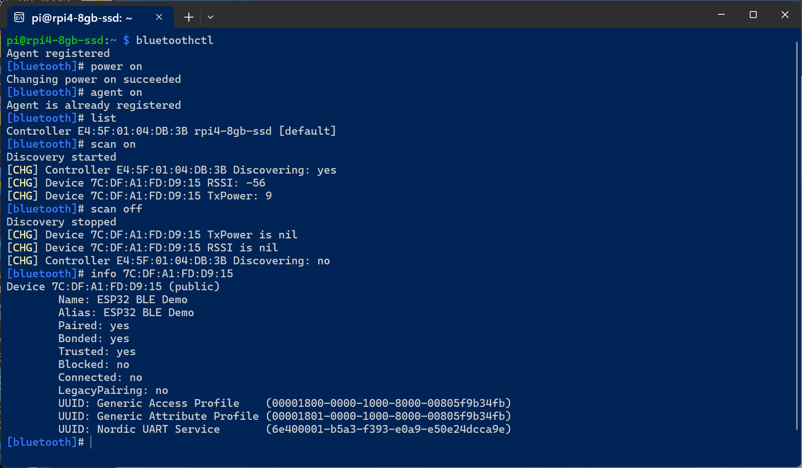

ตัวอย่างการเขียนโปรแกรมด้วย Arduino สำหรับใช้งาน ESP32 - Bluetooth LE#
▷ Bluetooth LE#
ในปัจจุบันการใช้งาน Bluetooth Low Energy (BLE) เป็นที่นิยมอย่างแพร่หลาย BLE เป็นโพรโทคอลย่อยภายใต้มาตรฐาน Bluetooth ซึ่งดูแลโดยองค์กรที่เรียกว่า Bluetooth SIG เปิดตัวครั้งแรกใน Bluetooth 4.0 เมื่อปีค.ศ. 2009 ถัดจากเวอร์ชันก่อนหน้าคือ Bluetooth Classic 1.0 – v.0
BLE สามารถสื่อสารข้อมูลไร้สายระยะใกล้ ในย่านความถี่ 2.4GHz ด้วยอัตราการรับส่งข้อมูล (Data Transfer Rate) สูงสุด 1 Mbps (Bluetooth 4.0) และ 2 Mbps (Bluetooth 5.0) ออกแบบมาสำหรับการสื่อสารที่ใช้พลังงานต่ำ เหมาะกับอุปกรณ์ที่ใช้แบตเตอรี่ขนาดเล็ก เช่น เซนเซอร์ อุปกรณ์สุขภาพ และสมาร์ทวอทช์ เป็นต้น ดังนั้นการเรียนรู้และทดลองใช้งาน BLE จึงเป็นหัวข้อสำคัญอีกหัวข้อหนึ่งเกี่ยวกับระบบสมองกลฝังตัว (Embedded Systems) และ Internet of Things (IoT)
- Bluetooth 5: เป็นเวอร์ชันที่พัฒนาต่อจาก Bluetooth 4.0 - 4.2
รองรับทั้ง Classic Bluetooth และ Bluetooth Low Energy (BLE)
- Bluetooth 5.0 (2016)
- Bluetooth 5.1 (2019)
- Bluetooth 5.2 (2020)
- Bluetooth 5.3 (2021)
- Bluetooth 5.4 (2023)
- Bluetooth Mesh Networking: ทำงานอยู่บนพื้นฐานของ BLE แต่เพิ่มความสามารถในการส่งข้อมูลต่อระหว่างอุปกรณ์ (Multi-hop Communication)
ชิปจากบริษัท Espressif หลายรุ่น เช่น ESP32, ESP32-S3, ESP32-C3, ESP32-C6 รองรับการสื่อสารข้อมูลไร้สายผ่านโปรโตคอลต่าง ๆ นอกเหนือจาก Wi-Fi ที่ทำงานบนย่านความถี่ 2.4GHz ได้แก่ เช่น BLE, Zigbee และ Thread
▷ หลักการทำงานของ BLE#
BLE (Bluetooth Low Energy) มีแนวคิดสำคัญในการสื่อสารข้อมูลดังนี้:
- การจำแนกประเภทของอุปกรณ์ หรือ บทบาททางกายภาพของอุปกรณ์:
- Peripheral: อุปกรณ์ที่ให้บริการ
- Central: อุปกรณ์ที่เชื่อมต่อเข้าไปยัง Peripheral เพื่อใช้บริการตามที่ประกาศไว้
- บทบาทในการสื่อสารข้อมูลผ่าน GATT
- Server: อุปกรณ์ที่มีข้อมูลและบริการให้ใช้งาน
- Client: อุปกรณ์ที่ร้องขอบริการจาก Server
- มีการกำหนด BLE Profiles และบริการ Services โดย Bluetooth SIG เช่น
- Heart Rate Profile และ Heart Rate Service ใช้กับอุปกรณ์ เช่น อุปกรณ์วัดชีพจร สายรัดสุขภาพ (Fitness Band) เป็นต้น
- การใช้งาน GATT (Generic Attribute Profile):
- เป็นโปรโตคอลสำคัญที่ใช้ใน BLE เพื่อกำหนดรูปแบบการแลกเปลี่ยนข้อมูลระหว่างอุปกรณ์ โดยเฉพาะในระบบที่มีการทำงานแบบ Client และ Server
- การแลกเปลี่ยนข้อมูลจะเกิดขึ้นตามรูปแบบที่กำหนดไว้โดย GATT โดยที่ใช้ส่งข้อมูลกับระหว่างอุปกรณ์ เป็นข้อมูล "ขนาดสั้น" เรียกว่า Attributes
- ข้อมูลจะถูกจัดกลุ่มเป็น Service และ Characteristic
- Service
- เป็นชุดของข้อมูลหรือฟังก์ชันที่อุปกรณ์ BLE ให้บริการ เช่น Heart Rate Service, Environmental Sensing ตามมาตรฐาน (กำหนดโดย Bluetooth SIG) หรือ Custom Service (กำหนดหรือสร้างขึ้นเองโดยนักพัฒนา)
- Characteristic
- อยู่ภายใต้ Service แต่ละ Characteristic จะมีคุณสมบัติ (Properties) ที่ระบุการเข้าถึงข้อมูลแต่ละตัว และมีหน่วยข้อมูล (Value) ที่สามารถเขียนหรืออ่านได้
- ประเภทการเข้าถึงข้อมูลใน Characteristic
- Read: อ่านค่าได้
- Write: เขียนค่าใหม่ได้
- Notify: แจ้งเตือน Client เมื่อค่ามีการเปลี่ยนแปลง
- Indicate: เหมือน Notify แต่ต้องการการยืนยันจาก Client
- UUID (Universally Unique Identifier)
- ใช้ระบุ Service และ Characteristic
- โดยทั่วไป มีขนาด 128 บิต หรือ 16 ไบต์ หรือ จะระบุเป็น 16 บิต เช่น
0x2A6E(เป็นแบบย่อ หากใช้ตามมาตรฐานที่กำหนดไว้แล้ว และจะถูกแปลงเป็น 128 บิต โดยอัตโนมัติ) - ตัวอย่าง 128-bit UUID เช่น
00002a37-0000-1000-8000-00805f9b34fb - UUID มาตรฐานถูกกำหนดโดย Bluetooth SIG (Special Interest Group)
- Service UUID: ระบุประเภทของบริการ
- Characteristic UUID: ระบุคุณสมบัติย่อยภายใน Service
- การโฆษณา (Advertising):
- อุปกรณ์ Peripheral จะส่งข้อมูลโฆษณา (Broadcast) เพื่อให้ Central เห็นและเชื่อมต่อได้
- ข้อจำกัดของ BLE
- ไม่เหมาะกับการสตรีมข้อมูลปริมาณมาก เช่น วิดีโอ เสียง
- ข้อมูลที่ส่งผ่าน Characteristic มีขนาดจำกัด
- การจับคู่กับอุปกรณ์ (BLE Pairing) แต่ไม่จำเป็นต้องทำสำหรับอุปกรณ์ BLE มีหลายวิธี โดยมีระดับความปลอดภัยต่างกัน เช่น
- ไม่ต้องใส่รหัส (Just Works)
- ต้องใส่รหัส เช่น 6 หลัก (Passkey Entry)
- ทั้งสองฝั่งแสดงรหัสเดียวกันที่ได้จากการสุ่ม และผู้ใช้ยืนยันว่าเหมือนกัน (Numeric Comparison)
ตัวอย่าง Service UUID สำหรับอุปกรณ์ประเภท BLE Environmental Sensing:
- UUID (16-bit):
0x181A(Environmental Sensing) - ตัวอย่าง Characteristic UUIDs (16 บิต) ภายใต้ Service นี้
- Temperature (
0x2A6E): อุณหภูมิ หน่วยเป็นองศาเซลเซียส (°C) - Humidity (
0x2A6F): ความชื้นสัมพัทธ์ หน่วยเป็นเปอร์เซ็นต์ (%) - Pressure (
0x2A6D): ความดันบรรยากาศ หน่วยเป็น Pascal (Pa) - UV Index (
0x2A76): ดัชนีรังสี UV - Wind Speed (
0x2A70): ความเร็วลม หน่วยเป็น เมตร/วินาที
- Temperature (
หากเป็นอุปกรณ์สมาร์ทโฟน เช่น Android ก็แนะนำให้ลองติดตั้งและใช้งาน nRF Connect ของบริษัท Nordic Semiconductor ผู้ใช้สามารถสแกนหาอุปกรณ์ BLE รอบ ๆ และลองเชื่อมต่อกับอุปกรณ์เหล่านั้นได้
▷ ตัวอย่างการตรวจหาอุปกรณ์ (BLE Scan)#
ถัดไปเป็นตัวอย่างโค้ดสำหรับ ESP32 สำหรับตรวจสอบว่า มีอุปกรณ์ BLE อยู่บริเวณรอบ ๆ หรือไม่ โดยใช้ไลบรารี
BLE
ที่รวมอยู่ใน Arduino-esp32 core แล้ว และมีการนำเข้าไฟล์ C Header สำหรับไลบรารี ดังนี้
<BLEDevice.h><BLEServer.h><BLEUtils.h><BLEScan.h><BLEAdvertisedDevice.h><BLESecurity.h>
File: esp32_ble_scan.ino
// BLE Scanner Example for ESP32 (Arduino-ESP32 core v3.0.0+)
// BLE: https://github.com/espressif/arduino-esp32/blob/master/libraries/BLE/
#include <BLEDevice.h>
#include <BLEUtils.h>
#include <BLEScan.h>
#include <BLEAdvertisedDevice.h>
int scanTime = 5; // BLE scan time (in seconds)
BLEScan* pBLEScan;
class MyAdvertisedDeviceCallbacks: public BLEAdvertisedDeviceCallbacks {
void onResult(BLEAdvertisedDevice advertisedDevice) {
// Show the BLE address
Serial.printf("BLE Address: %s\n",
advertisedDevice.getAddress().toString().c_str());
// Show device name if available
if (advertisedDevice.haveName()) {
Serial.printf("- Device Name: '%s'\n",
advertisedDevice.getName().c_str());
}
// Show the RSSI value (received signal strength indicator) if available
if (advertisedDevice.haveRSSI()) {
Serial.printf("- RSSI: %d\n", advertisedDevice.getRSSI() );
}
// Show the Tx power if available
if (advertisedDevice.haveTXPower()) {
Serial.printf("- Tx power: %d\n", advertisedDevice.getTXPower() );
}
}
};
void setup() {
Serial.begin(115200);
Serial.println("Starting ESP32 BLE Scanner...");
BLEDevice::init(""); // Initialize the BLE device
pBLEScan = BLEDevice::getScan(); // Get the BLE scanner
// Set the AdvertisedDevice Callback
pBLEScan->setAdvertisedDeviceCallbacks(
new MyAdvertisedDeviceCallbacks() );
pBLEScan->setActiveScan(true); // Use active scan
pBLEScan->setInterval(100); // Scan interval 100*0.625ms
pBLEScan->setWindow(99); // Scan window 99*0.625ms (less than scan interval)
}
void loop() {
Serial.printf( "Scanning for BLE devices (%d sec)...\n", scanTime);
// Start BLE scan (blocking call, waits until the scan completes)
BLEScanResults *results = pBLEScan->start(scanTime, false);
Serial.println( "Scan completed.\n\n" );
// Show the total number of BLE devices found after the BLE scan process
int deviceCount = results->getCount();
Serial.printf( "BLE devices found: %d\n\n", deviceCount );
// Clear the BLE scan results
pBLEScan->clearResults();
delay( 10000 );
}
โค้ดตัวอย่างนี้ มีการสร้างคลาส (Class) ชื่อ MyAdvertisedDeviceCallbacks
แบบกำหนดเองและสืบทอดมาจากคลาส BLEAdvertisedDeviceCallbacks
และเมื่อนำไปใช้ จะต้องมีการทำคำสั่งต่อไปนี้ก่อน
pBLEScan->setAdvertisedDeviceCallbacks( new MyAdvertisedDeviceCallbacks() );
โดยที่ pBLEScan คือ ตัวแปรที่เก็บอ็อบเจกต์ของ BLEScan (ใช้ในการสแกน BLE)
ภายในคลาส มีการสร้างฟังก์ชันสมาชิก onResult(...) ทำหน้าที่เป็น Callback Function
ซึ่งจะถูกเรียกใช้เมื่อมีการสแกนพบอุปกรณ์ BLE แต่ละตัว ดังนั้นจึงสามารถดูข้อมูลของอุปกรณ์ที่พบได้
(advertisedDevice) เช่น
- แสดงหมายเลข BLE Address ของอุปกรณ์:
advertisedDevice.getAddress() - แสดงชื่ออุปกรณ์:
advertisedDevice.getName()(ถ้ามี) - แสดงค่า RSSI ของสัญญาณ:
advertisedDevice.getRSSI()
หากต้องการสแกนหาอุปกรณ์ BLE ให้ทำซ้ำไปเรื่อย ๆ และมีการบันทึกและอัปเดตรายการอุปกรณ์ที่ตรวจพบ
ตามจำนวนสูงสุดที่กำหนดไว้ (MAX_DEVICES) ก็มีแนวทางดังนี้
File: esp32_ble_scan_list.ino
#include <BLEDevice.h>
#include <BLEScan.h>
#include <BLEAdvertisedDevice.h>
#include <vector>
#include <memory>
#include <algorithm>
#define MAX_DEVICES (30)
typedef struct {
BLEAddress addr;
int minRSSI;
int maxRSSI;
} ble_dev_info_t;
std::vector<std::shared_ptr<ble_dev_info_t>> deviceList;
int scanTime = 5; // Scan interval in seconds
BLEScan* pBLEScan;
void updateDeviceList(BLEAdvertisedDevice& foundDev) {
BLEAddress addr = foundDev.getAddress();
int rssi = foundDev.getRSSI();
// Check if device already exists
for (auto& dev: deviceList) {
if (dev->addr.equals(addr)) {
if (rssi < dev->minRSSI) { dev->minRSSI = rssi; }
if (rssi > dev->maxRSSI) { dev->maxRSSI = rssi; }
return;
}
}
// Not found: insert if space
if (deviceList.size() < MAX_DEVICES) {
auto newDev = std::make_shared<ble_dev_info_t>(ble_dev_info_t{addr,rssi,rssi});
deviceList.push_back(newDev);
} else {
// Replace weakest if new one is stronger
auto weakest = std::min_element(deviceList.begin(), deviceList.end(),
[](const std::shared_ptr<ble_dev_info_t>& a,
const std::shared_ptr<ble_dev_info_t>& b)
{
int a_rssi_avg = (a->minRSSI + a->maxRSSI) / 2;
int b_rssi_avg = (b->minRSSI + b->maxRSSI) / 2;
return a_rssi_avg > b_rssi_avg;
});
int weakest_rssi = ((*weakest)->minRSSI + (*weakest)->maxRSSI) / 2;
if (rssi > weakest_rssi) {
*weakest = std::make_shared<ble_dev_info_t>(ble_dev_info_t{addr,rssi,rssi});
}
}
// Optional: sort by strongest avg. RSSI
std::sort(deviceList.begin(), deviceList.end(),
[](const std::shared_ptr<ble_dev_info_t>& a,
const std::shared_ptr<ble_dev_info_t>& b)
{
int a_rssi_avg = (a->minRSSI + a->maxRSSI) / 2;
int b_rssi_avg = (b->minRSSI + b->maxRSSI) / 2;
return a_rssi_avg > b_rssi_avg; // Stronger first
});
}
class MyAdvertisedDeviceCallbacks : public BLEAdvertisedDeviceCallbacks {
void onResult(BLEAdvertisedDevice advertisedDevice) override {
updateDeviceList(advertisedDevice);
}
};
void printDeviceList() {
Serial.println("----------------------------------------");
Serial.println(" BLE Address | RSSI [min,max]");
Serial.println("----------------------------------------");
int idx = 1;
for (const auto& dev : deviceList) {
String ble_addr_str = dev->addr.toString();
ble_addr_str.toUpperCase();
Serial.printf("%2d) '%s' | %d, %d\n",
idx++, ble_addr_str.c_str(),
dev->minRSSI, dev->maxRSSI);
}
Serial.println("----------------------------------------");
}
void setup() {
Serial.begin(115200);
while (!Serial) delay(1);
Serial.println("Starting BLE scan...");
BLEDevice::init("");
pBLEScan = BLEDevice::getScan();
pBLEScan->setAdvertisedDeviceCallbacks(new MyAdvertisedDeviceCallbacks());
pBLEScan->setActiveScan(true);
pBLEScan->setInterval(100);
pBLEScan->setWindow(99);
}
void loop() {
Serial.printf( "Scanning for BLE devices (%d sec)...\n", scanTime);
// Start BLE scan (blocking call, waits until the scan completes)
pBLEScan->start(scanTime, false);
Serial.println("Scan done....\n");
printDeviceList();
delay(5000);
}
รูป: ตัวอย่างข้อความจากการทำงานแสดงของ ESP32 ที่ให้เห็นรายการอุปกรณ์ BLE ที่ตรวจพบ
▷ ตัวอย่างโค้ด Arduino ESP32: BLE Sensor#
ถัดไปเป็นโค้ดสาธิตการใช้อุปกรณ์ ESP32 ให้ทำหน้าที่เป็น BLE Peripheral / Server โดยจำลองสถานการณ์ให้อุปกรณ์ดังกล่าว สามารถอ่านค่าจากเซนเซอร์สิ่งแวดล้อม เช่น วัดค่าอุณหภูมิ (Air Temperature) ความชื้นสัมพัทธ์ในอากาศ (Relative Humidity) และความดันบรรยากาศ (Barometric Pressure) เป็นต้น และให้อุปกรณ์ BLE Central / Client เข้ามาเชื่อมต่อเพื่ออ่านข้อมูลดังกล่าวได้ ด้วยวิธี Notify เมื่อมีการอัปเดตค่าจากอุปกรณ์เซนเซอร์
File: esp32_env_sensor.ino
// ESP32 BLE Environmental Sensor (Server / Peripheral)
#include <BLEDevice.h>
#include <BLEServer.h>
#include <BLEUtils.h>
#include <BLE2902.h>
// UUIDs for Environmental Sensing
#define SERVICE_UUID 0x181A // Environmental sensing
#define CHAR_UUID_TEMP 0x2A6E // Temperature Characteristic
#define CHAR_UUID_HUMID 0x2A6F // Hunmidity Characteristic
#define CHAR_UUID_PRESS 0x2A6D // Barometric Pressure Characteristic
BLEServer* pServer = NULL;
BLECharacteristic *pTemperatureCharacteristic;
BLECharacteristic *pHumidityCharacteristic;
BLECharacteristic *pPressureCharacteristic;
bool advertising = false;
bool connected = false;
// Set initial sensor values (for simulation purpose)
float temperature = 30.0; // deg.C
float humidity = 60.0; // %RH
float pressure = 1010.0; // hPa
class MyServerCallbacks : public BLEServerCallbacks {
void onConnect(BLEServer* pServer) {
connected = true;
Serial.println("Client connected");
advertising = false;
BLEDevice::getAdvertising()->stop();
}
void onDisconnect(BLEServer* pServer) {
connected = false;
Serial.println("Client disconnected");
}
};
void setup() {
Serial.begin(115200);
Serial.println("Starting ESP32 BLE Environmental Sensor");
// Init the BLE device and specify the device name
BLEDevice::init("ESP32 BLE Demo");
// Set TX power to +9dBm (max.)
BLEDevice::setPower(ESP_PWR_LVL_P9); // +9 dBm
// Create a BLE server
pServer = BLEDevice::createServer();
// Set the user-defined BLE server callback object
pServer->setCallbacks(new MyServerCallbacks());
// Create service
BLEService *pService =
pServer->createService( BLEUUID((uint16_t)SERVICE_UUID) );
// Create GATT services
BLECharacteristic *pCharacteristic;
// 1) Create temperature characteristic
pCharacteristic = pService->createCharacteristic(
BLEUUID((uint16_t)CHAR_UUID_TEMP),
BLECharacteristic::PROPERTY_READ |
BLECharacteristic::PROPERTY_NOTIFY);
pCharacteristic->addDescriptor(new BLE2902());
pTemperatureCharacteristic = pCharacteristic;
// 2) Create humidity characteristic
pCharacteristic = pService->createCharacteristic(
BLEUUID((uint16_t)CHAR_UUID_HUMID),
BLECharacteristic::PROPERTY_READ |
BLECharacteristic::PROPERTY_NOTIFY);
pCharacteristic->addDescriptor(new BLE2902());
pHumidityCharacteristic = pCharacteristic;
// 3) Create pressure characteristic
pCharacteristic = pService->createCharacteristic(
BLEUUID((uint16_t)CHAR_UUID_PRESS),
BLECharacteristic::PROPERTY_READ |
BLECharacteristic::PROPERTY_NOTIFY);
pCharacteristic->addDescriptor(new BLE2902());
pPressureCharacteristic = pCharacteristic;
// Start BLE service
pService->start();
// Start service advertising
BLEAdvertising *pAdvertising = BLEDevice::getAdvertising();
pAdvertising->addServiceUUID(BLEUUID((uint16_t)SERVICE_UUID));
pAdvertising->setScanResponse(true);
pAdvertising->setMinPreferred(0x06);
pAdvertising->setMinPreferred(0x12);
pAdvertising->start();
advertising = true;
Serial.println("BLE device is advertising...");
}
static int32_t randomInt(int32_t min, int32_t max ) {
int32_t value = esp_random() % (max-min+1) + min;
return value;
}
void loop() {
// Simulate envronmental sensor updates
temperature += (randomInt(-2,2) * 0.1);
humidity += (randomInt(-10,10) * 0.1);
pressure += (randomInt(-5,5) * 0.1);
// Clamp values
temperature = constrain(temperature, 25.0, 40.0); // deg.C
humidity = constrain(humidity, 45.0, 90.0); // %
pressure = constrain(pressure, 990.0, 1010.0); // hPa
int16_t temp = (int16_t)(temperature*100); // 0.01 deg.C
int16_t humid = (int16_t)(humidity*100); // 0.01 %
uint32_t press = (uint32_t)(pressure*100*10); // 0.1 Pa
if (connected) {
// Update the values
pTemperatureCharacteristic->setValue( (uint8_t *)&temp, sizeof(temp) );
pHumidityCharacteristic->setValue( (uint8_t *)&humid, sizeof(humid) );
pPressureCharacteristic->setValue( (uint8_t *)&press, sizeof(press) );
// Notify the value changes
pTemperatureCharacteristic->notify();
pHumidityCharacteristic->notify();
pPressureCharacteristic->notify();
}
else {
if (!advertising) {
advertising = true;
// Restart advertising so the server is discoverable again
BLEDevice::getAdvertising()->start();
Serial.println("Advertising restarted");
}
}
Serial.printf("Temperature: %.2f °C, ", temperature);
Serial.printf("Humidity: %.2f %%RH, ", humidity);
Serial.printf("Pressure: %.1f hPa\n", pressure);
delay(1000); // Send update every 1 sec
}

รูป: ตัวอย่างข้อความเอาต์พุตจากการทำงานของ ESP32
ผู้ใช้สามารถติดตั้งแอพพลิเคชัน nRF Connect ในสมาร์ทโฟน และลองเชื่อมต่อกับอุปกรณ์ ESP32 BLE
รูป: การใช้ nRF Connect App บนสมาร์ทโฟน Android เชื่อมต่อกับอุปกรณ์ ESP32 BLE
▷ การเขียนโค้ด Arduino: ESP32 BLE Client#
ถัดไปเป็นตัวอย่างการเขียนโค้ด Arduino Sketch โดยใช้บอร์ด ESP32 อีกบอร์ดหนึ่ง ให้ทำหน้าที่เป็น BLE Client เพื่อสแกนหาอุปกรณ์ ESP32 BLE Peripheral ตามหมายเลขแอดเดรสที่กำหนดไว้ แล้วเชื่อมต่อเพื่อรับการแจ้งเตือน เมื่อมีการอัปเดตค่าเซนเซอร์
// ESP32 BLE Client (Central)
#include <BLEDevice.h>
#include <BLEUtils.h>
#include <BLEScan.h>
#include <BLEClient.h>
#include <BLE2902.h>
#include <BLEAdvertisedDevice.h>
// Service UUID and Characteristic UUIDs provided by the BLE server
#define SERVICE_UUID BLEUUID((uint16_t)0x181A)
#define CHAR_UUID_TEMP BLEUUID((uint16_t)0x2A6E)
#define CHAR_UUID_HUMID BLEUUID((uint16_t)0x2A6F)
#define CHAR_UUID_PRESS BLEUUID((uint16_t)0x2A6D)
static BLEAddress *sensorAddress;
static boolean doConnect = false;
static boolean connected = false;
BLEClient* pClient;
BLERemoteCharacteristic* pTempChar;
BLERemoteCharacteristic* pHumidChar;
BLERemoteCharacteristic* pPressChar;
void notifyCallback(
BLERemoteCharacteristic* pCharacteristic,
uint8_t* pData, size_t length, bool isNotify)
{
if (pCharacteristic->getUUID().equals(CHAR_UUID_TEMP)) {
int16_t tempRaw = *(int16_t*)pData;
Serial.printf("Temperature: %.2f °C\n", tempRaw / 100.0);
}
else if (pCharacteristic->getUUID().equals(CHAR_UUID_HUMID)) {
int16_t humidRaw = *(int16_t*)pData;
Serial.printf("Humidity: %.2f %%\n", humidRaw / 100.0);
}
else if (pCharacteristic->getUUID().equals(CHAR_UUID_PRESS)) {
uint32_t pressRaw = *(uint32_t*)pData;
Serial.printf("Pressure: %.1f hPa\n", pressRaw / 1000.0);
}
}
class MyAdvertisedDeviceCallbacks: public BLEAdvertisedDeviceCallbacks {
void onResult(BLEAdvertisedDevice advertisedDevice) {
sensorAddress = new BLEAddress(advertisedDevice.getAddress());
Serial.printf("BLE MAC: %s\n", sensorAddress->toString().c_str());
if (advertisedDevice.haveServiceUUID() &&
advertisedDevice.isAdvertisingService(SERVICE_UUID))
{
Serial.println("Found a BLE environmental sensor!");
sensorAddress = new BLEAddress(advertisedDevice.getAddress());
advertisedDevice.getScan()->stop(); // Stop BLE scanning
doConnect = true;
}
}
};
bool connectToServer() {
pClient = BLEDevice::createClient();
Serial.println("Connecting to server...");
if (!pClient->connect(*sensorAddress)) {
Serial.println("Failed to connect.");
return false;
}
BLERemoteService* pService = pClient->getService(SERVICE_UUID);
if (pService == nullptr) {
Serial.println("Service not found.");
return false;
}
pTempChar = pService->getCharacteristic(CHAR_UUID_TEMP);
pHumidChar = pService->getCharacteristic(CHAR_UUID_HUMID);
pPressChar = pService->getCharacteristic(CHAR_UUID_PRESS);
if (pTempChar && pTempChar->canNotify()) {
pTempChar->registerForNotify(notifyCallback);
}
if (pHumidChar && pHumidChar->canNotify()) {
pHumidChar->registerForNotify(notifyCallback);
}
if (pPressChar && pPressChar->canNotify()) {
pPressChar->registerForNotify(notifyCallback);
}
return true;
}
void setup() {
Serial.begin(115200);
Serial.println("Starting ESP32 BLE Client");
BLEDevice::init("");
BLEScan* pBLEScan = BLEDevice::getScan();
pBLEScan->setAdvertisedDeviceCallbacks(
new MyAdvertisedDeviceCallbacks() );
pBLEScan->setInterval(1349);
pBLEScan->setWindow(449);
pBLEScan->setActiveScan(true); // Send a scan request to devices found
pBLEScan->start(60, false); // Start scanning for 60 sec without blocking
}
void loop() {
if (doConnect && !connected) {
if (connectToServer()) {
connected = true;
Serial.println("Connected to sensor!");
} else {
Serial.println("Failed to connect, retrying...");
Serial.println("Restart BLE scan");
// Restart BLE scan, non-blocking
BLEDevice::getScan()->stop();
BLEDevice::getScan()->start(0, false);
connected = false;
}
doConnect = false;
}
delay(1000);
}
รูป: ตัวอย่างข้อความเอาต์พุตที่ได้จากการทำงานของ ESP32 BLE Client ซึ่งแสดงให้เห็นว่า สามารถเชื่อมต่อกับอุปกรณ์ ESP32 BLE Peripheral (Server) ได้
▷ การเขียนโค้ด Python โดยใช้ไลบรารี bleak#
ถัดไปเป็นตัวอย่างการเขียนโค้ดด้วยภาษา Python โดยได้เลือกใช้ไลบรารี
bleak เพื่อตรวจสอบหาอุปกรณ์ BLE
ให้สร้าง Python Virtual Environment แล้วติดตั้งไลบรารี bleak ด้วยคำสั่งดังนี้
$ pip install bleak
โค้ดต่อไปนี้ ใช้สำหรับการค้นหาอุปกรณ์ BLE ที่อยู่รอบ ๆ เมื่อตรวจพบอุปกรณ์ ก็จะเลือกหนึ่งอุปกรณ์ ที่มีค่า RSSI สูงสุด ซึ่งจะเป็นอุปกรณ์ที่อยู่ใกล้ ๆ กับคอมพิวเตอร์ของผู้ใช้ แล้วแสดงข้อมูลเกี่ยวกับอุปกรณ์ เช่น Service UUID เป็นต้น
File: bleak_ble_scan.py
import asyncio
from bleak import BleakScanner, BleakClient # use bleak v0.22.x
async def main():
# Discover devices with advertisement data
results = await BleakScanner.discover(return_adv=True)
if not results:
print("No BLE devices found.")
return
# Show all found devices
for i, (addr, (dev, adv_data)) in enumerate(results.items()):
print(f"[{i+1}] MAC: {addr} RSSI: {adv_data.rssi}")
# Pick device with highest RSSI
dev_addr, (_,adv_data) = max(results.items(), key=lambda item: item[1][1].rssi)
print(f"\nConnecting to device: {dev_addr} (RSSI: {adv_data.rssi})\n")
# Connect and list services
async with BleakClient(dev_addr) as client:
if client.is_connected:
print(f"Connected to MAC: {dev_addr}, ",
f"name: '{adv_data.local_name}', ",
f"tx_power: {adv_data.tx_power}")
services = client.services
for service in services: # show service UUIDs
print(f"Service UUID: {service.uuid}")
asyncio.run(main())
เมื่อสามารถสแกนหาอุปกรณ์ BLE ได้แล้ว โค้ดตัวอย่างถัดไป สาธิตการค้นหาอุปกรณ์
และเมื่อพบว่า มีอุปกรณ์ที่มี Service UUID (0x181A) ตรงตามที่กำหนดไว้
ก็ให้เชื่อมต่อและอ่านข้อมูลจากอุปกรณ์ดังกล่าว
ในตัวอย่างนี้ได้ใช้บอร์ด ESP32 ทำหน้าที่เป็นอุปกรณ์ BLE Peripheral
ที่ให้ข้อมูลเป็นค่าตัวเลขจากเซนเซอร์สิ่งแวดล้อม (Environmental Sensor)
File: bleak_ble_client.py
from bleak import BleakClient
import asyncio
# Specify the target BLE MAC address of the ESP32 board
TARGET_BLE_ADDR = "7C:DF:A1:FD:D9:15"
# Service UUID and Characteristic UUIDs to be used
SERVICE_UUID = "0000181a-0000-1000-8000-00805f9b34fb"
TEMP_UUID = "00002a6e-0000-1000-8000-00805f9b34fb"
HUMIDITY_UUID = "00002a6f-0000-1000-8000-00805f9b34fb"
PRESSURE_UUID = "00002a6d-0000-1000-8000-00805f9b34fb"
def bytes2int(data):
if data is None or len(data) < 2:
return 0 # หรือ raise Exception
return int.from_bytes(data, byteorder='little', signed=True)
async def readSensorValues(client: BleakClient):
try:
data_raw = await asyncio.wait_for(
client.read_gatt_char(TEMP_UUID), timeout=1.0)
temp = bytes2int(data_raw) / 100.0
data_raw = await asyncio.wait_for(
client.read_gatt_char(HUMIDITY_UUID), timeout=1.0)
humidity = bytes2int(data_raw) / 100.0
data_raw = await asyncio.wait_for(
client.read_gatt_char(PRESSURE_UUID), timeout=1.0)
pressure = bytes2int(data_raw) / 10.0
print(f"Temperature: {temp:.2f} °C")
print(f"Humidity: {humidity:.2f} %")
print(f"Pressure: {pressure / 100:.2f} hPa\n")
except asyncio.TimeoutError:
print('Read timeout.')
async def main():
service_found = False
async with BleakClient(TARGET_BLE_ADDR, timeout=4.0) as client:
# Wait until the client is connected
if client.is_connected:
print("Connected to BLE device.")
services = client.services
print("Services discovered:")
for service in client.services:
print(f" • UUID: {service.uuid} ({service.description})")
if service.uuid == SERVICE_UUID:
print(f" - Environmental Sensing service found.")
service_found = True
break
if not service_found:
print('No service UUID found')
return
service = client.services.get_service(SERVICE_UUID)
if not service:
print("Environmental Sensing service not found.")
return
print(60*'-')
print(f"Service: {service.uuid} ({service.description})")
for char in service.characteristics:
print(f" • Characteristic UUID: {char.uuid}")
print(f" - Properties: {char.properties}")
print(60*'-')
# Read values multiple times
for i in range(10):
await readSensorValues(client)
await asyncio.sleep(1.0)
else:
print("Failed to connect to BLE device.")
# Run the main function
try:
asyncio.run(main())
except KeyboardInterrupt:
print('Terminated by user...')
except Exception as e:
print(f"Failed to connect or communicate: {e}")
finally:
print('Done...')
รูป: ตัวอย่างข้อความเอาต์พุตจากการทำงานของโค้ด Python (ทดลองใช้กับ Python 3 ในระบบปฏิบัติการ Windows 11) ซึ่งสามารถเชื่อมต่อและรับค่าจาก BLE ESP32 Device ได้สำเร็จ
▷ การกรองหาอุปกรณ์ BLE ด้วยคำสั่ง bluetoothctl#
การกรองหาอุปกรณ์ (Device Filtering) อาจใช้วิธีตรวจสอบชื่ออุปกรณ์ หรือตรวจสอบ BLE Address
และสามารถใช้คำสั่ง เช่น bluetoothctl สำหรับ Ubuntu / x86_64
หรือ Raspbian-OS / Raspberry Pi เพื่อทดลองสแกนหาอุปกรณ์ BLE
ทดลองจับคู่อุปกรณ์ (Pairing) การเชื่อมต่อ (Connecting) และ
การเชื่อถืออุปกรณ์ (Trusting) เพื่อให้ระบบจำไว้และเชื่อมต่ออัตโนมัติในอนาคต เป็นต้น
ดังนั้นหากมีอุปกรณ์ ESP32 ที่ถูกโปรแกรมให้ทำหน้าที่เป็นอุปกรณ์ BLE Peripheral
ก็สามารถใช้คำสั่ง bluetoothctl เพื่อทดลองเชื่อมต่อกับอุปกรณ์ดังกล่าวได้
ตัวอย่างคำสั่งของ bluetoothctl ที่มีการใช้งาน เช่น
| คำสั่ง | คำอธิบาย |
|---|---|
| power on | เปิดการทำงานของอะแดปเตอร์ Bluetooth เช่น hci0 |
| agent on | เปิด agent สำหรับการจับคู่หรือใส่รหัส PIN / passkey |
| list | แสดงรายการของอะแดปเตอร์ Bluetooth ที่มีอยู่ในเครื่อง |
| scan on | เริ่มต้นการค้นหาอุปกรณ์ Bluetooth รอบ ๆ |
| scan off | หยุดการค้นหาอุปกรณ์ Bluetooth |
| info [MAC] | แสดงรายละเอียดของอุปกรณ์ที่ระบุด้วย MAC address |
| connect [MAC] | เชื่อมต่อกับอุปกรณ์ Bluetooth ตามที่อยู่ MAC |
| devices | แสดงอุปกรณ์ทั้งหมดที่เคยถูกค้นพบหรือจับคู่ |
| pair [MAC] | จับคู่กับอุปกรณ์ Bluetooth |
| trust [MAC] | ตั้งให้อุปกรณ์ตามหมายเลขแอดเดรส เป็นที่เชื่อถือ เพื่อให้เชื่อมต่ออัตโนมัติได้ในอนาคต |
| remove [MAC] | ลบอุปกรณ์ตามหมายเลขแอดเดรสที่เคยจับคู่ไว้ ออกไป |
| quit | ออกจากโปรแกรม bluetoothctl |
ตัวอย่างการใช้คำสั่ง เป็นไปตามข้อความดังต่อไปนี้ (ใช้บอร์ด Raspberry Pi 4 สำหรับการสาธิต)
$ bluetoothctl
[bluetooth]# power on
[bluetooth]# agent on
[bluetooth]# list
[bluetooth]# scan on
[bluetooth]# scan off
[bluetooth]# info 7C:DF:A1:FD:D9:15
[bluetooth]# connect 7C:DF:A1:FD:D9:15
[bluetooth]# devices
[bluetooth]# info 7C:DF:A1:FD:D9:15
[bluetooth]# quit

รูป: ตัวอย่างการทำคำสั่ง bluetoothctl โดยใช้บอร์ด Raspberry Pi 4
▷ กล่าวสรุป#
บทความนี้นำเสนอตัวอย่างการเขียนโค้ด Arduino Sketch สำหรับบอร์ดไมโครคอนโทรลเลอร์ ESP32
เพื่อใช้งานเป็นอุปกรณ์ BLE Peripheral จำลองการทำงานของเซนเซอร์วัดค่าสิ่งแวดล้อม เช่น อุณหภูมิ ความชื้นสัมพัทธ์ และความดันบรรยากาศ อีกทั้งสามารถเชื่อมต่อกับคอมพิวเตอร์ของผู้ใช้ผ่านโค้ด Python โดยใช้ไลบรารี bleak
This work is licensed under a Creative Commons Attribution-ShareAlike 4.0 International License.
Created: 2025-04-25 | Last Updated: 2025-04-26